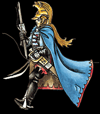

Imperial Forces |
Force Disposition Introduction |
Ork Forces |
|

The ability of the Dragoons to cause discord between themselves and other regiments followed them to Armageddon when several units were deployed to the Ork Hunter's Hell Town to receive training in the hunting of feral Orks still inhabiting the jungles of the planet. The two regiments could not be more diametrically opposed in their approach to warfare and arguments between officers were common. The situation erupted when Ork Hunter Colonel Pertinax , commanding officer of Hell Town, ordered the Dragoons to maintain perimeter positions that the Pyran's viewed as suicidally weak. It was said after the Battle of Hell Town that the argument between Pertinax and Dragoon Colonel Tannley-Drake could be clearly heard over the whole fortified camp until, finally, the Pyran challenged his counterpart to a duel.
Accounts differ as to the outcome of the duel, but the Pyran Dragoons have always maintained that their Colonel nobly scored first blood against the Ork Hunter, allowing the entire regiment to honourably retire to Infernus Hive for further orders.
|
| ||||||||||||||||||||||||||||||||||||||||||||||||||
|
The civilised world of Pyran has a stringent and divisive caste-based society, developed and refined over millennia after the initial colonisation of the planet in M34. At the very apex of this elitist world is the ruling Imperial Governor, chosen directly by the Adeptus Terra from one of the leaders of the Greater Noble Houses. The people of Pyran are intrinsically bound by their traditions in a way few off-worlders comprehend and the standing of any one of the noble houses rests almost solely on the social graces of its members, as well as their military achievements within the Dragoons.
The long and distinguished history of the Pyran Dragoons is the main source of the immense pride that all the noble houses, Greater and Lesser, deem essential to their very existence. Originally founded in M34 as the Tyler Grenadiers to counter a sharp rise in Chaos raider activity that followed the Sinto Uprising in the Justicar sub-sector, the regiment was transported to the recently colonised world of Pyran as the war swept past Armageddon. Though the Tyler regiment was battered and severely under strength due its to past engagements, the Grenadiers were successful in bringing the Chaos raiders to combat in an ambush outside the planet's only town. The devastating trap of hidden vehicles and ranked Guardsmen tore into the flanks of the raiders as they landed and though the fighting caused many losses on both sides, the Grenadiers were able to break the back of the Chaos army, forcing them to withdraw from Imperial space entirely. The Colonel of the regiment declared Right of Conquest on the last planet his regiment had fought upon and his Guardsmen settled on Pyran. Though Imperial histories are often grow vague by time, the Pyran Dragoons, as they later became known, have kept a keen affinity with their past deeds, particularly as they are the only regiment in the entire Armageddon sub-sector that is recorded as having achieved a Right of Conquest.
The officers of the Pyran Dragoons are drawn from the highest ranks of the noble houses. Officially, each commission for officership must be earnt on the field of battle, but as military service within the Dragoons grants a tremendous boon to any man's social standing, in practice many nobles are able to simply purchase their way in. Once their commission is gained, almost all officers become very jealous of their rank and constantly vie with one another to gain the notice of their superiors. Though duelling between officers is outlawed by decree within the regiment, duels are all too common as nobles seek to correct imagined slights, remove rivals or simply look to discredit another house by any method possible. The officer's strict adherence to the edicts and traditions of their houses has often led them to be intolerant of any who are ignorant of the nuances of their society and the regiment has gained a reputation of having an extreme lack of collaboration with other Imperial Guard formations, with formal challenges to duels often being made by Pyran officers after a counterpart in another regiment has unintentionally infringed some long standing tradition of the Dragoons. The Guardsmen of the regiment are drawn from the Lower Houses and, despite the constant berating they receive from their officers, they are all too aware of the long and proud history of the Pyran Dragoons and view themselves as being somewhat superior to any other regiment that treats its Guardsmen as mere 'ground-pounders.' They are confident in their own sense of worth to the Imperium. Very occasionally, a Guardsman, through bravery and success, will distinguish himself on the battlefield and, depending on the current standing of his noble house, may gain the attention of his commanding officer. On a whim, he may be raised above the rank of Guardsman and be granted a commission to Lieutenant. Whilst this will grant a tremendous boost to his house, officers raised from Guardsmen are treated with an extreme contempt by those who have earned their birthright and he will be barred from the many social functions that officers usually take for granted. During times of war, he will even be denied access to tactical meetings and will be barely tolerated by other officers. The Guardsmen they lead into battle are also prone to receive their new officer poorly, preferring to be led by a man from one of the Greater Houses as the standing of their own officer greatly influences their own position amongst other troopers. It is not entirely unknown for these newly promoted officers to soon meet with 'accidents' when they lead their men into combat for the first time.
| |||||||||||||||||||||||||||||||||||||||||||||||||||